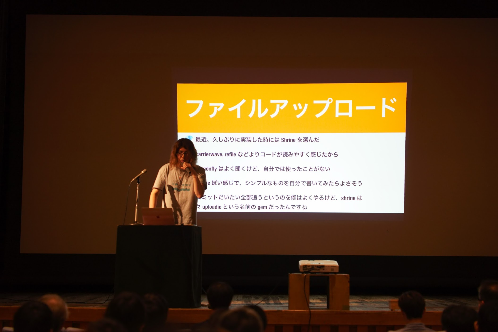
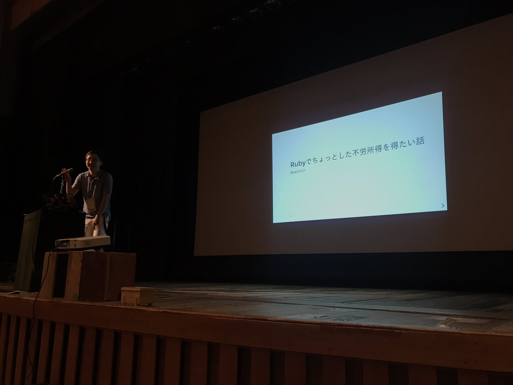
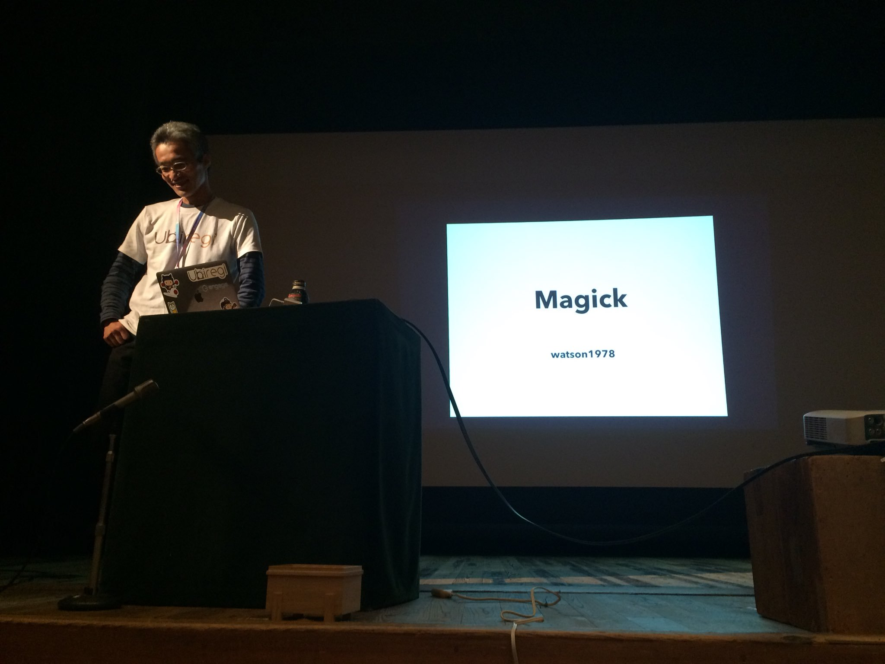
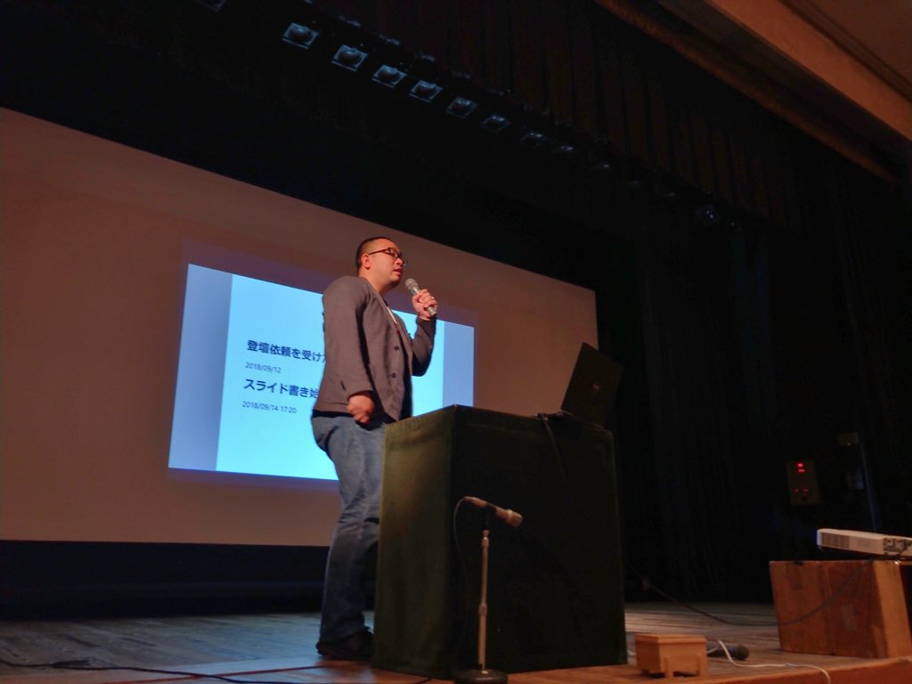
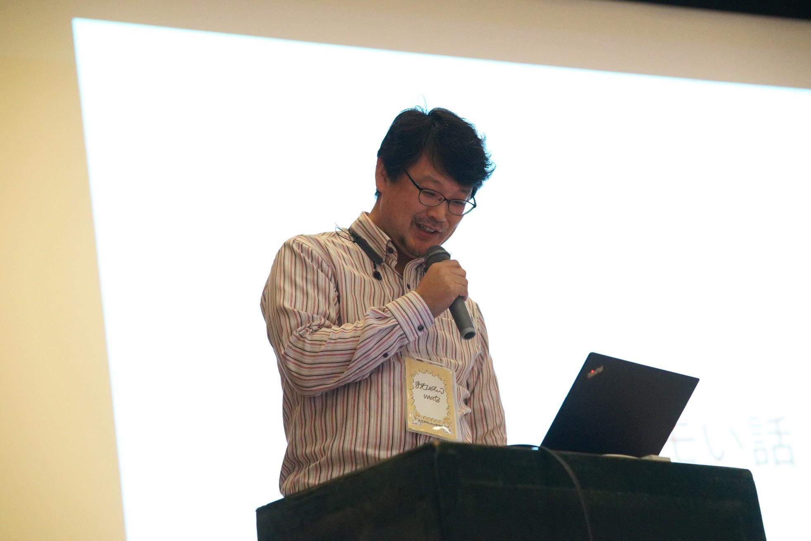
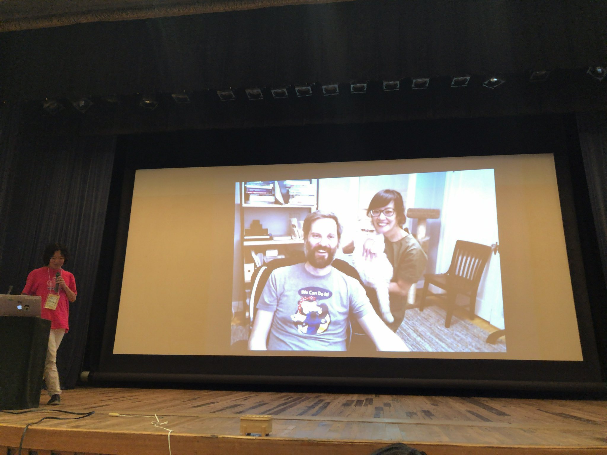

RegionalRubyKaigi レポート (72) 大江戸 Ruby 会議 07
初稿：2019-01-27
RegionalRubyKaigi レポート 大江戸 Ruby 会議 07
はじめに
2018年9月15日（土）に大江戸Ruby会議07が開催されました。今年は浅草 雷5656会館での開催となりました。176名の方々にご参加いただきました。

- 日時：2018年9月15日（土）10:00〜17:15
- 場所：浅草 雷5656会館
- 主催：Asakusa.rb
- 後援：日本Rubyの会
- 公式タグ・Twitter：#oedo07
ごあいさつ

- 発表者
- 松田さん@a_matsuda
生活発表（最新）

- 発表者
- 古橋さん@284km
- 資料
古橋さんからは、さっき書いてみたものとして、ファイルアップロードのプログラムを通し、既存のgemではなく、自分でプログラムを書いて得られる良いことをご紹介いただきました。
また、参加されているRed Data Tools projectsで、現在担当されているData visualization tool for Rubyについてのお話をしていただきました。 この開発はRubyアソシエーション 開発助成金2018にされる予定とのことです。
RubyKaigi 2018 CFPで、惜しくもRejectされたCSV parserについての続報も教えていただきました。
Rubyでちょっとした不労所得を得たい話

- 発表者
- 大森さん@sachin21__
- 資料
大森さんからは、Rubyを使った不労所得を得る方法として、「マイニング」「ビットコイントレード」「個人サービス開発」を題材に、それぞれのメリット、デメリット、ランニングコスト、プログラマにとっての楽しさなど技術的な視点でお話しをいただきました。
不労所得ほしい！
僕のスライドツール変遷

- 発表者
- 中村さん@yu_suke1994
- 資料
中村さんからは、Rubyistの生活に欠かせないスライド発表として、過去のスライドツールの変遷から、現在利用されているRabbitについてのお話しをいただきました。
プルリクエストを通じて普段使っているツールへの貢献ができ、身近に感じられて良いと思いました。
基調講演

- 発表者
- Schefflerさん@thejonanshow
‘デカ外人’というニックネームで知られるSchefflerさんからは、「HOW TO BE デカ」と題して、ジョークと愛のあふれるライフマニュアルについて基調講演をしていただきました。
- Lesson1 Have Heroes / ハブヒロ 自分のヒロ(Hero)を探すこと。SchefflerさんのHeroはMatzだそうです。 (‘ハブヒロ’で、hiro_asariさんの画像が映し出され、期待通り?のジョークに会場の笑いを誘いました。)
- Lesson2 Keep Swimming / 泳げ 悲しい日でも頑張ってください。
- Lesson3 Beginners’s Mind / 馬鹿にして アメリカに禅を広めた僧侶 鈴木俊隆の著書「初心・禅心」のお話を交えて、謙虚に初心を忘れずに。
- Lesson4 You’re Awesome / 君はAWESOME うまくいかないことがあった場合に、自分のことを馬鹿だと自分に言ってしまう人がいるけれど、誰も聞いていなくても、自分の頭は聞いているから、自分に悪口を言わない。
- Lesson5 Love / ラブラブラブ もっとラブを伝え合おう。 (5が、Gopherになっていて、会場の笑いを誘いました。)
RubyKaigiでもおなじみのデカ外人クイズもあり、大盛り上がりの基調講演でした。
Magick

- 発表者
- 藤田さん@watson1978
- 資料
藤田さんからは、「僕の最強のRMagic」を見せていただきました。
RMagicをinstallしようとしたところ、エラーではまったところから、ImageMagick7へ対応を行っているというお話をしていただきました。
2019年4月までに、マージされてリリースされるとことを目標にされているとのことです。(RubyKaigi 2019で詳しいお話が聞けるかもしれません。)
生活発表

- 発表者
- 片山さん@sinamon129
- 資料
片山さんからは、「エンジニアやるぞ のきっかけ」「好きなことで、生きていく」「そうだ、Asakusa.rbに行こう！」の3部構成の発表をしていただきました。
大学生の頃、お手伝いをしていたサービスのサーバを落とした結果、「どうやったら落とさず安定稼働できるのだろう」「安定運用できるアプリケーションを作りたい」という気持ちからエンジニアを目指すことになったそうです。
Ninja Talk2

- 発表者
- 小池さん@ssig33
小池さんの発表は、大江戸Ruby会議07の開催日が9/15で、登壇を依頼されたのが、9/12。スライドを書き始めたのが、9/14 17:20という衝撃のお話から始まりました。
業務で使用されているサーバ構成のお話、Alpine Linuxを使用して困ったお話などをしていただきました。
Alpine LinuxのImageMagickは、ImageMagick7のためエラーになってしまうため(同僚である藤田さんの発表と繋がっています)、業務時間を使ってOSS活動をして欲しいとお話されていました。
だしもの

- 発表者
- The Ruby Team@rubylangorg
- 資料
壇上にRubyコミッターが座り、Rubyの変更について議論する、RubyKaigiのRuby Committers VS the World形式の「だしもの」でした。 Rubyコミッターの遠藤さん(@mametter)から、Ruby 2におけるキーワード引数でのおかしな挙動の例が示され、Ruby 3に向けてどうするか？の議論が行われました。
現在検討されている変更によるRailsへの影響の懸念や、Railsコミュニティの方向性など(会場にいたRailsコミッターの@y_yagiさんの意見を伺いました)、様々な議論がなされ、いつものAsakusa.rbミートアップのような雰囲気となりました。
議論されていた内容は、Ruby2.6で、キーワード引数とオプション引数のコーナーケースが禁止という形で変更され、Ruby 3に向けての ‘breaking changes’ の一歩となっているようです。
Rubyを壊す話

- 発表者
- 松本さん@yukihiro_matz
松本さんからは、「Gitに移行したいお気持ち」が表明され、会場が湧きました。
Ruby 3に向けて、非互換なコードを自動で変換してくれるツールがあれば移行が楽になるかもしれません。Ruby 2.6から導入されたRubyVM::AbstractSyntaxTreeの導入はその先駆けとなるのでしょうか。
The First Decade of Regional RubyKaigi

- 発表者
- 角谷さん@kakutani
- 資料
角谷さんからは、地域Ruby会議のコミュニティについてお話しをいただきました。普段あまり聞けない地域Ruby会議の歴史について知ることができ、貴重な体験でした。
10周年記念講演

- 発表者
- 松田さん@a_matsuda + 友情出演の皆さん
- 資料
松田さんからは、Asakusa.rbの10年の振り返りをお話しいただきました。
松田さんはインプットのためではなくアウトプットのための場としてAsakura.rbを立ち上げたそうで、あのkaminari gemもAsakusa.rbで生まれたとのことでした。ちなみに、kaminariは名前が思いつかずリリースできなかったところをAsakura.rbのメンバーが命名し、リリースとなったそうです。
Asakusa.rb はメンバーの分布が広く、アフリカ大陸と南極大陸以外は実質浅草であることを地図で示し、また、世界中のAsakusa.rbの仲間たちからビデオレターが届き会場が湧きました。
著者について
江森 真由美@emorima
酒とRubyと時々(福山)雅治。るびま執筆中も雅治Tシャツを着用。加圧トレーニングにハマっており、8年目に突入。
桐山 藍@lime1024
FJORD BOOT CAMP在籍中。美味しいものと料理が好き。旦那とesaで料理レシピを共有している。
Special Thanx
@hsbt, @ujm, @284km, @yu_suke1994 写真提供等、ありがとうございました！